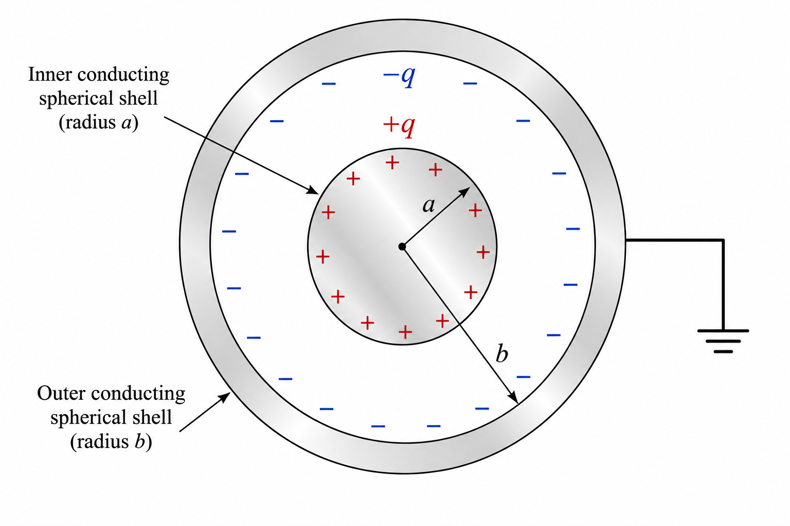

Chapter 2: Electrostatic Potential and Capacitance
Dear Class 12 Student! While Chapter 1 dealt with the vector side of electrostatics (Force and Field), this chapter introduces the incredibly powerful Scalar approach — Potential and Energy. You will learn how energy is stored in capacitors — the foundation of every modern electronic circuit. The derivations here (especially the Parallel Plate Capacitor, Dielectric Slab, and Energy Loss in Sharing) are guaranteed board exam questions. Let's master this chapter completely!
2.1 Electrostatic Potential and Potential Difference
Conservative Nature of the Electrostatic Force
The work done by the electrostatic force in moving a charge from point A to point B depends only on the initial and final positions and is completely independent of the path taken. This is the defining property of a conservative force. Because of this property, we can assign a unique scalar "potential energy" to every point in the electric field, just like gravitational potential energy.
Core Definitions
Electrostatic Potential Difference ($V_B - V_A$): The work done by an external agent in moving a unit positive test charge slowly (without acceleration, i.e., no change in kinetic energy) from point A to point B against the electrostatic force.
$$V_B - V_A = \frac{W_{A \to B}}{q_0}$$
Electrostatic Potential at a Point ($V$): The work done by an external agent in bringing a unit positive test charge from infinity (the reference point, where $V = 0$) to that point, without acceleration.
$$V = \frac{W_{\infty \to P}}{q_0}$$
SI Unit: Volt (V) = Joule per Coulomb (J/C). It is a Scalar Quantity (no direction). Dimensional Formula: $[ML^2T^{-3}A^{-1}]$.
Key Relation: Work done by external agent = Charge × Potential difference: $W = q_0(V_B - V_A)$. Work done by electrostatic field = $-W_{external} = q_0(V_A - V_B)$.
Figure 2.1 — Work done in moving a charge between two points in an electric field
Derivation: Potential due to a Single Point Charge
Let a source charge $+q$ be at origin O. We find the potential at point P, at a distance $r$ from O. We bring a test charge $+q_0$ from infinity to P very slowly (in equilibrium, no kinetic energy gained) along any path (say, radial).
At an intermediate distance $x$ from origin, the electrostatic (repulsive) force on the test charge is:
$$\vec{F}_{elec} = \frac{1}{4\pi\epsilon_0} \frac{q \cdot q_0}{x^2} \hat{x} \quad \text{(directed away from O, i.e., outward)}$$
The external force required to move it without acceleration: $\vec{F}_{ext} = -\vec{F}_{elec}$ (directed inward).
Work done by external force from $\infty$ to $r$:
$$W = \int_\infty^r \vec{F}_{ext} \cdot d\vec{x} = \int_\infty^r \left(-\frac{1}{4\pi\epsilon_0} \frac{q q_0}{x^2}\right)(-dx)$$
$$ \begin{aligned} W &= \frac{q q_0}{4\pi\epsilon_0} \int_\infty^r \frac{dx}{x^2} \\ &= \frac{q q_0}{4\pi\epsilon_0}\left[-\frac{1}{x}\right]_\infty^r \\ &= \frac{q q_0}{4\pi\epsilon_0}\left(-\frac{1}{r} + \frac{1}{\infty}\right) \\ &= \frac{q q_0}{4\pi\epsilon_0 r} \end{aligned} $$
Since $V = \frac{W}{q_0}$, we get:
Formula: Potential due to Point Charge
$$\boxed{V = \frac{1}{4\pi\epsilon_0} \frac{q}{r} = \frac{kq}{r}}$$
If $q > 0$: $V > 0$ at all finite distances. Potential decreases as $r$ increases.
If $q < 0$: $V < 0$ at all finite distances. Potential becomes less negative as $r \to \infty$.
Key Comparison: $E \propto \dfrac{1}{r^2}$ (vector) whereas $V \propto \dfrac{1}{r}$ (scalar). Electric field falls off faster than potential.
The potential at $r = \infty$ is zero (reference). The potential at the surface of the charge itself ($r \to 0$) is infinite.
Superposition Principle for Potential
Since potential is a scalar quantity, the net potential at a point due to a system of $n$ charges is simply the algebraic sum of the individual potentials. No vector addition needed!
where $r_i$ is the distance of the $i$-th charge from the point in question, and $q_i$ carries its sign.
Concept Alert — Why Scalar Nature is PowerfulElectric Field vs. Potential:
For electric field due to multiple charges, you must add vectors — resolve into x, y, z components and add separately.
For electric potential, you simply add numbers (with signs). This makes potential calculations far easier and is heavily tested in JEE and NEET.
Practice Problems — Section 2.1Q1 (NCERT Example): Two charges $3 \times 10^{-8}$ C and $-2 \times 10^{-8}$ C are located 15 cm apart. At what point(s) on the line joining the two charges is the electric potential zero?
Solution:
Let $q_1 = +3 \times 10^{-8}$ C at A and $q_2 = -2 \times 10^{-8}$ C at B, with $AB = 15$ cm.
Case 1: Point P between A and B
Let $AP = x$ cm, $BP = (15 - x)$ cm.
$V_P = \frac{kq_1}{x} + \frac{kq_2}{15-x} = 0 \Rightarrow \frac{3}{x} = \frac{2}{15-x}$
$\Rightarrow 3(15-x) = 2x \Rightarrow 45 = 5x \Rightarrow x = 9$ cm Point P is 9 cm from $q_1$, between the two charges.
Case 2: Point P outside, beyond B
Let $AP = x$ cm, $BP = (x - 15)$ cm.
$\frac{3}{x} = \frac{2}{x-15} \Rightarrow 3x - 45 = 2x \Rightarrow x = 45$ cm Another zero is at 45 cm from $q_1$ (beyond $q_2$).
Q2 (Board Type): Four equal charges $+q$ are placed at the four corners of a square of side $a$. Find the electric potential at the centre of the square.
Solution:
Distance of each corner from the centre $= \frac{a\sqrt{2}}{2} = \frac{a}{\sqrt{2}}$.
Potential due to each charge: $V_i = \frac{kq}{a/\sqrt{2}} = \frac{k\sqrt{2}q}{a}$
Total potential at centre: $V = 4 \times V_i = \dfrac{4\sqrt{2}kq}{a} = \dfrac{4\sqrt{2}q}{4\pi\epsilon_0 a} = \dfrac{\sqrt{2}q}{\pi\epsilon_0 a}$
Q3 (JEE Type): The electric potential at a point $(x, 0, 0)$ is given by $V = \frac{1000}{x} + \frac{1500}{x^2} + \frac{500}{x^3}$ volts. Find the electric field at $x = 1$ m.
Q4 (NEET Type): A charge of $+2$ µC is moved from a point at potential $+100$ V to a point at potential $-50$ V. What is the work done by the external agent?
Solution:
$W_{ext} = q(V_B - V_A) = 2 \times 10^{-6} \times (-50 - 100) = 2 \times 10^{-6} \times (-150) = -3 \times 10^{-4}$ J = $\mathbf{-0.3}$ mJ. Negative work means the external agent does negative work — the field does positive work; the charge moves in the direction of decreasing potential (naturally).
2.1 (Continued) — Potential due to an Electric Dipole
A dipole consists of two equal and opposite charges $+q$ and $-q$ separated by a small distance $2a$, with dipole moment $\vec{p} = q \times 2a$ directed from $-q$ to $+q$.
Derivation: General Formula for Dipole Potential at Point P($r$, $\theta$)
Let point P be at distance $r$ from the centre O of the dipole. Let OP make angle $\theta$ with the dipole axis (direction of $\vec{p}$). Let $r_1$ = distance from $+q$ to P, and $r_2$ = distance from $-q$ to P.
For a short dipole ($r \gg a$), using the perpendicular dropped from $+q$ and $-q$ to line OP:
$r_1 \approx r - a\cos\theta$ (distance from $+q$ to P is less when $\theta < 90°$)
$r_2 \approx r + a\cos\theta$ (distance from $-q$ to P is more)
Net potential at P:
$$ \begin{aligned} V &= \frac{1}{4\pi\epsilon_0}\left[\frac{q}{r_1} + \frac{(-q)}{r_2}\right] \\ &= \frac{q}{4\pi\epsilon_0}\left[\frac{1}{r-a\cos\theta} - \frac{1}{r+a\cos\theta}\right] \end{aligned} $$
$$ \begin{aligned} V &= \frac{q}{4\pi\epsilon_0}\cdot\frac{(r+a\cos\theta)-(r-a\cos\theta)}{r^2-a^2\cos^2\theta} \\ &= \frac{q}{4\pi\epsilon_0}\cdot\frac{2a\cos\theta}{r^2-a^2\cos^2\theta} \end{aligned} $$
Since $r \gg a$, we have $r^2 \gg a^2\cos^2\theta$, so we drop $a^2\cos^2\theta$. Also $q \times 2a = p$:
Formula: Dipole Potential at General Point
$$\boxed{V = \frac{1}{4\pi\epsilon_0}\frac{p\cos\theta}{r^2}}$$
Valid only for a short dipole ($r \gg a$).
$V \propto \dfrac{1}{r^2}$ for a dipole — falls off faster than a point charge ($\propto 1/r$).
Dipole potential depends on both distance $r$ AND angle $\theta$.
Special Cases of Dipole Potential
On the Axial Line (towards $+q$, $\theta = 0°$): $\cos 0° = 1$.
$$V_{axial(+)} = +\frac{p}{4\pi\epsilon_0 r^2} \quad \text{(positive)}$$
On the Axial Line (towards $-q$, $\theta = 180°$): $\cos 180° = -1$.
$$V_{axial(-)} = -\frac{p}{4\pi\epsilon_0 r^2} \quad \text{(negative)}$$
On the Equatorial Plane ($\theta = 90°$): $\cos 90° = 0$.
$$\boxed{V_{equatorial} = 0}$$
Zero potential at every point on the equatorial plane — contributions from $+q$ and $-q$ exactly cancel because both are equidistant from a point on the equatorial line.
Figure 2.2 — Electric Dipole: Geometry for Potential Derivation
Practice Problems — Dipole PotentialQ1 (Board Classic): How much work is done in moving a test charge $q_0 = 5\,\mu$C from one point to another on the equatorial plane of an electric dipole?
Solution:
$V_{equatorial} = 0$ at every point on the equatorial plane.
$\Delta V = V_B - V_A = 0 - 0 = 0$
$W = q_0 \Delta V = 5 \times 10^{-6} \times 0 = \mathbf{0 \text{ J}}$ No work is done since all equatorial points are at the same potential (zero).
Q2 (Board Type): An electric dipole of moment $p = 4 \times 10^{-9}$ C·m is placed along the $x$-axis. Find the potential at a point P at distance $r = 0.3$ m making angle $\theta = 60°$ with the dipole axis.
Q3 (JEE Type): Two equal and opposite charges $+q$ and $-q$ are placed at $(0, 0, +a)$ and $(0, 0, -a)$ respectively. Find the electric potential at a point $(0, b, 0)$ on the equatorial plane. What does this imply?
Solution:
Distance from each charge to the point $(0, b, 0)$ is $\sqrt{b^2 + a^2}$ (same for both charges).
$V = \frac{kq}{\sqrt{a^2+b^2}} + \frac{k(-q)}{\sqrt{a^2+b^2}} = \frac{kq - kq}{\sqrt{a^2+b^2}} = \mathbf{0 \text{ V}}$ This confirms: every point on the equatorial plane is at zero potential — no approximation needed here (this is exact).
2.1 (Continued) — Potential due to Continuous Charge Distributions
1. Conducting Sphere (Solid or Hollow/Shell)
For a conducting sphere (whether solid or hollow), all excess charge $Q$ resides on its outer surface of radius $R$. The electric field inside is zero ($E=0$), which means the potential inside is constant and equal to the potential at the surface.
Outside ($r > R$): Acts like a point charge at the centre. $V_{out} = \frac{1}{4\pi\epsilon_0} \frac{Q}{r}$
At Surface ($r = R$): $V_{surface} = \frac{1}{4\pi\epsilon_0} \frac{Q}{R}$
Inside ($r < R$): Potential is constant and equal to surface potential. $V_{in} = V_{surface} = \frac{1}{4\pi\epsilon_0} \frac{Q}{R}$
For a uniformly charged non-conducting solid sphere of radius $R$ and total charge $Q$, the charge is distributed throughout its volume. The electric field inside is not zero, so the potential inside is not constant.
Outside ($r \geq R$): Acts like a point charge. $V_{out} = \frac{1}{4\pi\epsilon_0} \frac{Q}{r}$
Inside ($r < R$): The potential increases as you move towards the centre.
$$ \begin{aligned} V_{in} &= \frac{1}{4\pi\epsilon_0} \frac{Q}{2R^3} (3R^2 - r^2) \end{aligned} $$
At Centre ($r = 0$): $V_{centre} = \frac{3}{2} \left( \frac{1}{4\pi\epsilon_0} \frac{Q}{R} \right) = \frac{3}{2} V_{surface}$
Practice Problems — Continuous DistributionsQ1 (JEE Main Type): A solid non-conducting sphere of radius $R$ has a uniform charge density. What is the ratio of electric potential at the centre to the electric potential at the surface?
Solution:
For a solid non-conducting sphere, $V_{centre} = \frac{3}{2} V_{surface}$.
Therefore, the ratio is $\mathbf{3:2}$ or $\mathbf{1.5}$.
2.2 Equipotential Surfaces
Definition: A surface (real or imaginary) on which the electric potential has the same value at every point is called an equipotential surface. Moving a charge along such a surface requires zero work since $\Delta V = 0$.
Properties of Equipotential Surfaces — High Yield for Boards/NEET/JEE
No work is done in moving a charge along an equipotential surface.
Since $\Delta V = 0$ for any two points on the surface, $W = q \Delta V = 0$. Therefore the electrostatic force does zero work along the surface.
Electric field lines are always perpendicular (normal) to an equipotential surface. Proof: If $\vec{E}$ had a component $E_{\parallel}$ parallel to the surface, work done moving charge $q$ by displacement $ds$ along the surface would be $W = qE_{\parallel}ds \neq 0$. This contradicts property 1. Hence $\vec{E} \perp$ equipotential surface at every point.
Two equipotential surfaces can never intersect each other.
If they intersected at a point, that point would have two different potential values — which is physically impossible (potential is a single-valued function of position).
Equipotential surfaces are closer together where the electric field is stronger.
Since $E = -\frac{dV}{dr}$, a large $E$ means a large change in $V$ over a small distance — so the surfaces are crowded (closer spacing). The field is strong near a positive charge, so surfaces are closer near it.
The surface of a conductor in equilibrium is always an equipotential surface.
Since $E = 0$ inside a conductor, $-\frac{dV}{dr} = 0 \Rightarrow V =$ constant inside and on the surface.
Relation: $E = -\frac{dV}{dr}$ — Electric field is negative gradient of potential. Field points in the direction of decreasing potential (from high $V$ to low $V$).
Shapes of Equipotential Surfaces for Different Charge Configurations
Charge Configuration
Shape of Equipotential Surfaces
Shape of Field Lines
Isolated Positive Point Charge
Concentric spheres centred on the charge (closer near charge, farther away)
Radial straight lines pointing outward from the charge
Isolated Negative Point Charge
Concentric spheres centred on the charge
Radial straight lines pointing inward towards the charge
Uniform Electric Field (e.g., between large plates)
Flat planes perpendicular to the field direction (equally spaced)
Parallel straight lines (equally spaced)
Electric Dipole
Complex 3D surfaces — near each charge they look like spheres, but in between they form saddle-shaped surfaces
From $+q$ to $-q$, curving around; like loops of a bar magnet
Surface of a Conductor
The surface itself is equipotential; entire interior volume is also equipotential
Lines emerge perpendicular to the conductor surface
Figure 2.3 — Equipotential Surfaces for Different Charge Configurations
Relation Between Electric Field and Potential Gradient
Consider moving a unit positive charge through a small displacement $dr$ in the direction of field $\vec{E}$. The work done by the field: $dW = E\,dr$. By definition $dW = -dV$. Therefore:
$$\boxed{E = -\frac{dV}{dr}}$$
The quantity $\frac{dV}{dr}$ is called the potential gradient. SI unit: V/m (same as N/C for electric field).
Physical Meaning: Electric field points in the direction of decreasing potential. A positive charge at rest will naturally move from high potential to low potential (like water flowing downhill).
JEE Advanced Level — E in 3D
If $V(x, y, z)$ is given as a function of coordinates, the electric field vector is the negative gradient of $V$:
$$\vec{E} = -\nabla V = -\left(\frac{\partial V}{\partial x}\hat{i} + \frac{\partial V}{\partial y}\hat{j} + \frac{\partial V}{\partial z}\hat{k}\right)$$
Each component: $E_x = -\frac{\partial V}{\partial x}$, $E_y = -\frac{\partial V}{\partial y}$, $E_z = -\frac{\partial V}{\partial z}$.
Practice Problems — Section 2.2Q1 (JEE/Board): The electric potential in a region is given by $V = (3x^2 + 4y)$ V. Find the electric field at the point $(1, 2, 0)$.
Q2 (NCERT Ex. 2.2): A regular hexagon of side 10 cm has a charge $+5\,\mu$C at each of its six vertices. Calculate the potential at the centre of the hexagon.
Solution:
In a regular hexagon, the distance from each vertex to the centre equals the side length = 10 cm = 0.1 m.
$V_i = \frac{kq}{r} = \frac{9\times10^9 \times 5\times10^{-6}}{0.1} = 4.5\times10^5$ V
Total (6 identical charges): $V = 6 \times 4.5\times10^5 = \mathbf{2.7\times10^6 \text{ V}}$ (= 2.7 MV)
Q3 (NEET Type): Equipotential surfaces for a uniform electric field are:
(A) Spheres around the source
(B) Cylinders parallel to field
(C) Planes perpendicular to the field
(D) Planes parallel to the field
Answer: (C) — In a uniform field, field lines are parallel. Since equipotential surfaces must be perpendicular to field lines, they are flat planes perpendicular to the direction of the field.
2.3 Potential Energy of a System of Charges
A. Potential Energy of Two Point Charges
The potential energy (U) of a system of charges equals the total work done by an external agent in assembling those charges from infinity to their present configuration (against electrostatic forces), assuming no kinetic energy is gained.
Step 1: Bring charge $q_1$ from infinity to its position $\mathbf{r_1}$. No other charge is present, so work done $W_1 = 0$.
Step 2: Bring charge $q_2$ from infinity to its position $\mathbf{r_2}$, at a separation $r_{12}$ from $q_1$. Potential at $r_2$ due to $q_1$ is $V = \frac{kq_1}{r_{12}}$. Work done: $W_2 = q_2 V = \frac{kq_1 q_2}{r_{12}}$.
Formula: PE of Two Point Charges
$$\boxed{U = \frac{1}{4\pi\epsilon_0}\frac{q_1 q_2}{r_{12}}}$$
If $q_1$ and $q_2$ have the same sign: $U > 0$ (energy stored against repulsion).
If $q_1$ and $q_2$ have opposite signs: $U < 0$ (energy released as attraction brings them together).
To separate them to infinity: work done by external agent = $-U$ (if attractive pair, we must do positive work).
B. Potential Energy of a System of Three or More Charges
For $n$ charges, calculate the potential energy for every distinct pair and add algebraically. For $n$ charges, there are $\dfrac{n(n-1)}{2}$ pairs.
For three charges $q_1, q_2, q_3$ at mutual separations $r_{12}, r_{23}, r_{13}$:
JEE Tip — Counting Pairs
For $n$ charges: Number of pairs = $\binom{n}{2} = \frac{n(n-1)}{2}$.
2 charges → 1 pair; 3 charges → 3 pairs; 4 charges → 6 pairs; 5 charges → 10 pairs.
Practice Problems — Section 2.3Q1 (NCERT Ex.): Calculate the work required to separate two charges $+3\,\mu$C and $-2\,\mu$C placed 10 cm apart to infinity.
Solution:
Initial PE: $U_i = \frac{9\times10^9 \times 3\times10^{-6} \times (-2\times10^{-6})}{0.10} = \frac{-54\times10^{-3}}{0.10} = -0.54$ J.
Final PE (at $\infty$): $U_f = 0$ J.
Work done by external agent $= U_f - U_i = 0 - (-0.54) = \mathbf{+0.54 \text{ J}}$. Positive: external agent must do positive work to separate an attractive pair.
Q2 (Board Type): Three charges $q_1 = 2\,\mu$C, $q_2 = -4\,\mu$C, $q_3 = 3\,\mu$C are placed at the vertices of an equilateral triangle of side $20$ cm. Find the total potential energy of the system.
When charges exist in an external electric field (produced by some other source charges not part of our system), we need to compute potential energy of interaction with that field as well.
A. Single Charge $q$ at Position $\vec{r}$ in External Field
If the external field creates a potential $V(\vec{r})$ at the position of charge $q$:
$$\boxed{U = qV(\vec{r})}$$
Example: A charge $+Q$ placed at a point where external potential is $V_0$ has PE = $QV_0$. If $V_0 > 0$ and $Q > 0$, then $U > 0$ (energy was stored).
B. System of Two Charges in an External Field
Consider two charges $q_1$ at $\vec{r_1}$ and $q_2$ at $\vec{r_2}$ in an external field that produces potentials $V(\vec{r_1})$ and $V(\vec{r_2})$ at their positions. The total PE has three contributions:
Interaction of $q_1$ with the external field: $q_1 V(\vec{r_1})$
Interaction of $q_2$ with the external field: $q_2 V(\vec{r_2})$
Mutual interaction of $q_1$ and $q_2$: $\frac{kq_1 q_2}{r_{12}}$
C. Potential Energy of a Dipole in a Uniform External Field — Derivation
A dipole $\vec{p}$ placed in a uniform external field $\vec{E}$ at angle $\theta$ with the field experiences a torque that tends to align it. The torque magnitude: $\tau = pE\sin\theta$.
Work done by external torque to rotate dipole from angle $\theta_1$ to $\theta_2$:
$$W = \int_{\theta_1}^{\theta_2}\tau\,d\theta = pE\int_{\theta_1}^{\theta_2}\sin\theta\,d\theta = pE[-\cos\theta]_{\theta_1}^{\theta_2} = pE(\cos\theta_1 - \cos\theta_2)$$
Taking $\theta_1 = 90°$ as the reference position ($U = 0$) and $\theta_2 = \theta$:
$$W = pE(\cos90° - \cos\theta) = pE(0 - \cos\theta) = -pE\cos\theta$$
This work equals the potential energy stored:
Formula: PE of Dipole in Uniform Field
$$\boxed{U = -\vec{p}\cdot\vec{E} = -pE\cos\theta}$$
Orientation (θ)
PE (U)
Stability
Torque
$0°$ (aligned with field)
$-pE$ (minimum)
Stable equilibrium
$0$ (no tendency to rotate)
$90°$ (perpendicular)
$0$ (reference)
Neither stable nor unstable
$pE$ (maximum)
$180°$ (anti-parallel)
$+pE$ (maximum)
Unstable equilibrium
$0$ (but any small displacement rotates it)
Figure 2.4 — Dipole in Uniform External Electric Field: PE and Torque
Practice Problems — Section 2.4Q1 (Board/NEET): A dipole of moment $p = 6 \times 10^{-9}$ C·m is placed in a uniform electric field $E = 5 \times 10^4$ N/C. Find: (i) PE when aligned with field, (ii) PE when perpendicular to field, (iii) work done to rotate it from aligned position to 90°.
Solution:
(i) $\theta = 0°$: $U_1 = -pE\cos0° = -6\times10^{-9}\times5\times10^4\times1 = -3\times10^{-4}$ J $= \mathbf{-0.3 \text{ mJ}}$
(ii) $\theta = 90°$: $U_2 = -pE\cos90° = 0$
(iii) $W = U_2 - U_1 = 0 - (-3\times10^{-4}) = \mathbf{+3\times10^{-4} \text{ J} = 0.3 \text{ mJ}}$ Positive work is done by the external agent to pull the dipole away from its stable equilibrium.
Q2 (JEE Type): Charges $+q$ and $+q$ are located at $(0, 0, 0)$ and $(0, 0, a)$. A charge $-Q$ is brought from infinity to the point $(0, 0, 2a)$. What is the total work done?
Solution:
Potential at point $(0,0,2a)$ due to the two $+q$ charges:
Distance from $q_1$ at origin to $(0,0,2a)$ = $2a$; distance from $q_2$ at $(0,0,a)$ to $(0,0,2a)$ = $a$.
$V = k\frac{q}{2a} + k\frac{q}{a} = \frac{kq}{a}\left(\frac{1}{2}+1\right) = \frac{3kq}{2a}$
Work done by external agent to bring $-Q$ from $\infty$: $W = (-Q) \times V = -Q \times \frac{3kq}{2a} = \mathbf{-\frac{3kqQ}{2a}}$
2.5 Electrostatics of Conductors
5 Golden Properties of Conductors in Electrostatic Equilibrium
Net electric field inside a conductor is ZERO ($\vec{E}_{inside} = 0$). Reason: In electrostatic equilibrium, free electrons are stationary. If $E \neq 0$ inside, electrons would experience force $F = eE$, move, constitute a current — contradicting equilibrium. So $E = 0$ at all interior points.
All excess charge resides ONLY on the outer surface. Reason (by Gauss's Law): Draw any closed surface inside the conductor material. Since $E = 0$ inside, flux through this Gaussian surface $= 0 \Rightarrow q_{enclosed} = 0$. Hence no net charge at any interior point. All charge is on the surface.
Electric potential is constant throughout the volume AND surface of a conductor. Reason: Since $E = 0$ inside, $-\frac{dV}{dr} = 0 \Rightarrow V$ = constant. The conductor (interior + surface) is an equipotential region.
Electric field just outside the surface is perpendicular to the surface and has magnitude $\dfrac{\sigma}{\epsilon_0}$.
Where $\sigma$ is the local surface charge density. If $E$ had a tangential (parallel) component, it would drive surface currents — violating electrostatics.
Charge density is non-uniform on an irregular conductor: highest at regions of greatest curvature (sharp tips).
Since $E = \sigma/\epsilon_0$, the electric field is also strongest near sharp points. This is the principle behind lightning rods (corona discharge / point discharge).
Electrostatic Shielding
The interior cavity of a hollow conductor is completely shielded from external electric fields.
$E = 0$ inside the conductor material (by property 1).
If the cavity is empty (no charge inside), there is no charge on the inner surface of the cavity either (provable by Gauss's Law + uniqueness theorem).
Therefore, $\vec{E} = 0$ everywhere inside the cavity — regardless of how strong the external field is.
Applications:
Sensitive electronic instruments enclosed in metallic boxes (Faraday cages) are shielded from external interference.
Car chassis (metal body) protects passengers from lightning — it acts like a Faraday cage.
Coaxial cables shield signal-carrying wires from external electromagnetic interference.
Examiner's Note — Shielding vs. GravityCan we shield from a gravitational field? No! There are no negative masses, so gravitational field lines cannot cancel inside a region just by surrounding it with matter. Electrostatic shielding works because both positive and negative charges exist and can arrange to cancel the internal field. This distinction is a common 2-mark Board question.
Figure 2.5 — Electrostatic Shielding: Hollow Conductor in External Field
Charge Distribution on Parallel Conducting Plates
A classic concept frequently tested in JEE (found in texts like H.C. Verma and D.C. Pandey) is how charge distributes when multiple large, parallel conducting plates are brought close to each other and given arbitrary charges.
Golden Rules for Parallel Plates
Outermost Surfaces: The total charge on the two outermost surfaces of the entire system of plates is always equal, and is exactly half the algebraic sum of all charges given to the plates.
$$ q_{outer} = \frac{Q_1 + Q_2 + \cdots + Q_n}{2} $$
Facing Surfaces: The facing surfaces of any two adjacent plates will always have equal and opposite charges (due to Gauss's Law and $E=0$ inside the conductors).
Conservation of Charge: The sum of charges on the left and right surfaces of any isolated plate must equal the total charge given to that plate ($q_{left} + q_{right} = Q_{total}$).
Example: Two Plates with Charges $Q$ and $0$
If plate A has charge $Q$ and plate B is uncharged ($0$):
Facing surface of A gets: $Q - \frac{Q}{2} = +\frac{Q}{2}$.
Facing surface of B must be equal and opposite: $-\frac{Q}{2}$.
Outer surface of B gets: $0 - \left(-\frac{Q}{2}\right) = +\frac{Q}{2}$. (Matches our first rule!)
Figure 2.6a — Charge distribution on two parallel plates. The facing surfaces have equal and opposite charges, setting up an electric field between them.
Example: Three Plates with Charges $Q$, $-2Q$, and $3Q$
Let three plates A, B, and C be placed parallel to each other with charges $Q$, $-2Q$, and $3Q$ respectively.
Step 1 (Outer surfaces): Total charge = $Q - 2Q + 3Q = +2Q$. The outermost surfaces (left of A, right of C) each get $\frac{+2Q}{2} = +Q$.
Step 2 (Inner surfaces of A): Plate A has total charge $Q$. Left surface has $+Q$. So, right surface of A gets $Q - (+Q) = 0$.
Step 3 (Facing surfaces A & B): Right surface of A is $0$. Therefore, the facing left surface of B must be $-0 = 0$.
Step 4 (Inner surfaces of B): Plate B has total charge $-2Q$. Left surface has $0$. So, right surface of B gets $-2Q - 0 = -2Q$.
Step 5 (Facing surfaces B & C): Right surface of B is $-2Q$. Therefore, the facing left surface of C must be $-(-2Q) = +2Q$.
Step 6 (Check C): Right surface of C would be $3Q - 2Q = +Q$. This perfectly matches our Step 1 calculation!
Figure 2.6b — Charge distribution on three parallel plates. Notice how facing surfaces always have equal and opposite charges, and the outermost surfaces share the total charge equally.
Earthing (Grounding) of Conductors
The Earth is a massive conductor. Due to its enormous size, its capacitance is extremely large, meaning it can accept or supply an almost unlimited amount of charge without significantly changing its own electric potential.
The Golden Rule of Earthing
By convention, the electric potential of the Earth is taken to be zero ($V_{earth} = 0$). When any conductor is connected to the Earth (earthed/grounded), charge flows between the conductor and the Earth until the potential of the conductor becomes zero ($V = 0$).
Common Misconception (Trap!)
Many students incorrectly think that "earthing a conductor means its net charge becomes zero ($Q = 0$)." This is only true for an isolated conductor. If there are other charged bodies nearby, the earthed conductor will draw charge from the Earth to maintain $V = 0$. In this state, its potential is zero, but its net charge $Q \neq 0$.
Classic Example: Earthing Concentric Shells
Consider two concentric conducting shells of radii $a$ and $b$ ($a < b$).
If outer shell is earthed (inner shell has $+q$): The potential of the outer shell must be zero. It will induce a charge $-q$ on its inner surface to cancel the field from $+q$. The charge on its outer surface goes to Earth. The total charge on the outer shell becomes $-q$.
If inner shell is earthed (outer shell has $+Q$): Charge $q'$ flows from Earth to the inner shell such that the total potential at the inner shell becomes zero:
$$ V_{inner} = \frac{k q'}{a} + \frac{k Q}{b} = 0 \implies q' = -Q \left(\frac{a}{b}\right) $$
Notice how the earthed inner shell acquires a non-zero, negative charge!

Figure — Earthing of concentric shells. The outer earthed shell induces a charge -q to maintain $V=0$.
Practice Problems — Section 2.5Q1 (Board 3 marks): State any three properties of an ideal conductor in electrostatic equilibrium. Explain why the electric field inside a conductor is zero.
Answer:
Properties: (i) $E = 0$ inside. (ii) $V$ = constant throughout. (iii) Charge only on outer surface.
Reason for E = 0: In electrostatic equilibrium, no current flows (by definition). If $E \neq 0$ at any interior point, the free electrons (which are abundant in a conductor) would experience a force $F = eE$ and would start moving — establishing a current. This contradicts the definition of electrostatics. Hence, in equilibrium, the field must be zero at every interior point.
Q2 (Board 2 marks): Why does the electric field at the surface of a conductor have a component normal to it but no tangential component?
Answer:
If the electric field had a component tangential (parallel) to the surface of the conductor, it would exert a force on the free charges on the surface, causing them to flow along the surface. This current would violate the condition of electrostatic equilibrium. Hence, in equilibrium, the tangential component must be zero — the field is purely normal (perpendicular) to the surface.
Q3 (NEET Type): A spherical conducting shell of inner radius $r_1$ and outer radius $r_2$ has charge $Q$. A charge $+q$ is placed at the centre. Find the surface charge density on (i) inner surface, (ii) outer surface.
Solution:
By Gauss's Law, field inside the shell material = 0, so charge on inner surface = $-q$ (induced).
Total charge on shell = $Q$, so charge on outer surface = $Q - (-q) = Q + q$.
(i) Inner surface charge density: $\sigma_{inner} = \frac{-q}{4\pi r_1^2}$
(ii) Outer surface charge density: $\sigma_{outer} = \frac{Q+q}{4\pi r_2^2}$
2.6 Dielectrics and Polarisation
Dielectrics are non-conducting substances (insulators) in which all electrons are tightly bound to their atoms — no free electrons. Examples: glass, mica, paper, water, rubber, wax.
Types of Dielectric Molecules
Property
Non-polar Molecules
Polar Molecules
Centre of positive charge
Coincides with centre of negative charge
Does NOT coincide with centre of negative charge
Net dipole moment (without field)
Zero
Non-zero (permanent dipole moment)
Examples
H₂, O₂, N₂, CO₂, CH₄, C₆H₆
H₂O, HCl, NH₃, SO₂, HF
Behaviour in external field
Field induces a dipole moment (stretches the electron cloud)
Field partially aligns the permanent dipoles
Figure 2.6 — Polarisation of Non-polar and Polar Dielectrics in an External Field
Polarisation of a Dielectric in an External Field
When a dielectric is placed in an external electric field $\vec{E}_0$:
Non-polar molecules: The external field distorts the electron cloud relative to the nucleus. The centre of negative charge shifts slightly opposite to the field; the centre of positive charge shifts slightly in the direction of the field. Each molecule acquires an induced electric dipole moment along $\vec{E}_0$.
Polar molecules: The field exerts torque on each permanent dipole, partially aligning them with $\vec{E}_0$. (Thermal agitation prevents perfect alignment — hence only partial alignment at room temperature.)
In both cases, the net effect is: the dielectric develops a macroscopic dipole moment per unit volume, called the Polarisation Vector $\vec{P}$.
Polarisation Vector ($\vec{P}$): Net dipole moment per unit volume of the dielectric.
$$\vec{P} = \chi_e \epsilon_0 \vec{E}$$
where $\chi_e$ is the Electric Susceptibility (dimensionless, $\chi_e \geq 0$).
Effect of Polarisation: The aligned dipoles create a field $\vec{E}_P$ that opposes the applied field. The net field inside the dielectric is reduced:
$$E_{net} = E_0 - E_P$$
Why Water has such a High K?
Water molecules (H₂O) are highly polar: they have a large permanent dipole moment (~1.85 Debye). In an external field, they align well (despite thermal agitation), creating a large opposing field. This results in a very high dielectric constant of ~80 — which is why water is an excellent solvent for ionic compounds.
Practice Problems — Section 2.6Q1 (Board 2 marks): Distinguish between polar and non-polar dielectrics with two examples each.
Answer: Non-polar: Centre of +ve and -ve charges coincide → zero permanent dipole moment. Examples: H₂, O₂. Polar: Centre of +ve and -ve charges do not coincide → permanent dipole moment. Examples: H₂O, HCl.
Q2 (Board 3 marks): What is electric polarisation? How does polarisation reduce the effective electric field inside a dielectric?
Answer:
Polarisation is the alignment of atomic/molecular dipoles in the direction of an external field, giving the dielectric a net dipole moment per unit volume ($\vec{P}$).
When a dielectric is placed in a field $E_0$: The aligned dipoles create an internal electric field $E_P$ (called the polarisation field) that is directed opposite to $E_0$. This opposing field partially cancels $E_0$, resulting in a reduced net field inside the dielectric: $E_{net} = E_0 - E_P = E_0/K$, where $K > 1$ is the dielectric constant.
2.7 Capacitors and Capacitance
A capacitor is a system of two conductors (called plates) separated by an insulating medium (vacuum, air, or a dielectric), designed to store electric charge and energy.
When charge $+Q$ is given to one plate, it induces charge $-Q$ on the other plate (connected to ground or being a conductor). This creates a potential difference $V$ between the plates.
Capacitance depends ONLY on geometry (shape, size, separation of plates) and the medium between them. It does NOT depend on $Q$ or $V$ individually.
Capacitance of an isolated sphere of radius $R$: $C = 4\pi\epsilon_0 R$. For Earth ($R \approx 6.4\times10^6$ m): $C_{Earth} \approx 711\,\mu$F.
Derivation: Capacitance of a Parallel Plate Capacitor (Board Exam Favourite — 5 marks)
A parallel plate capacitor consists of two large, flat, parallel conducting plates each of area $A$, separated by distance $d$, with $d \ll \sqrt{A}$ (edge effects negligible). Plate 1 carries $+Q$ (surface charge density $\sigma = Q/A$), Plate 2 carries $-Q$.
Step 1: Find Electric Field between the plates.
Each plate acts as an infinite plane of charge. Using Gauss's Law (pillbox Gaussian surface):
$$E_{each\,plate} = \frac{\sigma}{2\epsilon_0}$$
Between the plates, fields from both plates add up (same direction):
$$\boxed{E = \frac{\sigma}{\epsilon_0} = \frac{Q}{\epsilon_0 A}} \quad \text{(uniform, from + to − plate)}$$
Outside the capacitor, fields from both plates cancel: $E_{outside} = 0$.
Step 2: Find Potential Difference $V$ between the plates.
In a uniform field, potential difference = field × distance:
$$V = E \times d = \frac{Qd}{\epsilon_0 A}$$
When a capacitor is charged from $q=0$ to $q=Q$, at an intermediate stage when charge is $q$ and potential is $v = q/C$, the work done in adding a further small charge $dq$:
$$dW = v\,dq = \frac{q}{C}\,dq$$
Total work done (= energy stored) in charging from 0 to $Q$:
$$U = \int_0^Q \frac{q}{C}\,dq = \frac{1}{C}\cdot\frac{q^2}{2}\bigg|_0^Q = \frac{Q^2}{2C}$$
Energy Stored in a Capacitor — All 3 Forms
$$\boxed{U = \frac{Q^2}{2C} = \frac{1}{2}CV^2 = \frac{1}{2}QV}$$
All three forms are equivalent (use $Q = CV$ to convert between them). Choose the most convenient form depending on what is given.
Energy Density (Energy per unit volume of field):
$$\boxed{u = \frac{U}{\text{Volume}} = \frac{\frac{1}{2}CV^2}{Ad} = \frac{\frac{1}{2}\cdot\frac{\epsilon_0 A}{d}\cdot(Ed)^2}{Ad} = \frac{1}{2}\epsilon_0 E^2}$$
This is a universal formula — energy density of any electric field is $\dfrac{1}{2}\epsilon_0 E^2$.
Practice Problems — Section 2.7Q1 (Board 5 marks): Derive the expression for energy stored in a parallel plate capacitor. Express it in three different forms.
Solution: [Complete derivation above — refer to the derivation section.]
Three forms: $U = \frac{Q^2}{2C} = \frac{1}{2}CV^2 = \frac{1}{2}QV$
Q2 (NCERT): A parallel plate capacitor with air between the plates has capacitance 8 pF. What will be the capacitance if separation is halved and the space is filled with dielectric of $K = 6$?
Q4 (JEE Type): A parallel plate capacitor (area $A$, separation $d$) is connected to a battery of EMF $\mathcal{E}$. The energy stored is $U_0$. Now the plates are pulled apart to separation $2d$ while the battery remains connected. Find the new energy stored.
Solution:
Battery connected → Voltage $V = \mathcal{E}$ remains constant.
$C_0 = \frac{\epsilon_0 A}{d}$, so $U_0 = \frac{1}{2}C_0\mathcal{E}^2 = \frac{\epsilon_0 A \mathcal{E}^2}{2d}$
New capacitance with separation $2d$: $C' = \frac{\epsilon_0 A}{2d} = \frac{C_0}{2}$
New energy: $U' = \frac{1}{2}C'\mathcal{E}^2 = \frac{1}{2}\cdot\frac{C_0}{2}\cdot\mathcal{E}^2 = \frac{U_0}{2}$ Energy halves when separation doubles at constant voltage. The battery withdraws charge (since $Q' = C'\mathcal{E} < Q$).
2.8 Effect of Dielectric on Capacitance
A. Capacitor Completely Filled with Dielectric (Dielectric Constant $K$)
When the full space between the plates is filled with a dielectric of constant $K$:
The electric field is reduced to $E = E_0/K$ (due to polarisation opposing the field).
Potential difference becomes $V = Ed = E_0 d/K = V_0/K$ (since charge $Q$ is unchanged when battery is disconnected).
A dielectric slab of thickness $t$ (where $t < d$) and dielectric constant $K$ is inserted between the plates. The remaining gap $(d - t)$ is vacuum.
Figure 2.8 — Parallel Plate Capacitor with Partial Dielectric Slab of Thickness t
Step 1: Electric field in each region.
The surface charge density $\sigma = Q/A$ is unchanged. Using boundary conditions (normal D-field is continuous):
$$E_0 = \frac{Q}{\epsilon_0 A} \quad \text{(vacuum region of thickness } d-t\text{)}$$
$$E = \frac{Q}{K\epsilon_0 A} = \frac{E_0}{K} \quad \text{(inside dielectric of thickness } t\text{)}$$
Step 2: Total potential difference $V$.
$$V = E_0(d-t) + E \cdot t = \frac{Q}{\epsilon_0 A}(d-t) + \frac{Q}{K\epsilon_0 A}\cdot t = \frac{Q}{\epsilon_0 A}\left[(d-t) + \frac{t}{K}\right]$$
Step 3: Capacitance $C = Q/V$.
Formula: Capacitor with Partial Dielectric Slab
$$\boxed{C = \frac{\epsilon_0 A}{d - t + \dfrac{t}{K}}}$$
Special Cases:
• If $K \to \infty$ (conducting slab, not a dielectric but useful limit): $C = \dfrac{\epsilon_0 A}{d - t}$ — equivalent to reducing plate separation by $t$.
• If $K = 1$ (vacuum/air slab): $C = \dfrac{\epsilon_0 A}{d}$ — original capacitance (as expected).
• If $t = d$ (full dielectric): $C = \dfrac{K\epsilon_0 A}{d}$ — full dielectric formula.
C. Battery Connected vs. Battery Disconnected — Comparison Table
When a dielectric slab (constant $K$) is inserted into a charged parallel plate capacitor, the outcome depends on whether the battery is connected:
Quantity
Battery DISCONNECTED (Q = constant)
Battery CONNECTED (V = constant)
Capacitance $C$
Increases: $C' = KC_0$
Increases: $C' = KC_0$
Charge $Q$
Constant: $Q' = Q_0$
Increases: $Q' = KQ_0$ (battery supplies more charge)
Voltage $V$
Decreases: $V' = V_0/K$
Constant: $V' = V_0$ (maintained by battery)
Electric Field $E$
Decreases: $E' = E_0/K$
Constant: $E' = E_0$ (same since $V, d$ unchanged)
Energy $U$
Decreases: $U' = U_0/K$ (dielectric is pulled in — does work)
Increases: $U' = KU_0$ (battery does extra work; energy stored increases)
Memory TrickDisconnected = Q is constant. Everything else adjusts. Connected = V is constant. Everything else adjusts.
Inserting a dielectric always increases $C$. But the effect on $V$, $Q$, $E$, $U$ depends on the constraint.
Practice Problems — Section 2.8Q1 (Board 5 marks): A parallel plate capacitor of plate area $A$ and separation $d$ has capacitance $C_0$. A dielectric slab of thickness $t = d/2$ and dielectric constant $K = 3$ is inserted between the plates (with battery disconnected). Find the new capacitance, new potential difference, and new electric field in each region.
Electric field in vacuum region: $E_0' = \frac{\sigma}{\epsilon_0} = \frac{Q_0}{A\epsilon_0}$ (unchanged — same $Q$)
Electric field inside dielectric: $E' = E_0'/K = \frac{Q_0}{3A\epsilon_0} = \frac{E_0'}{3}$
Q2 (JEE Type): A parallel plate capacitor (area $A = 10^{-2}$ m², separation $d = 1$ mm) is connected to a 100 V battery. A dielectric slab ($K = 5$, $t = 0.5$ mm) is then inserted while keeping the battery connected. Find the increase in charge on the capacitor.
Solution:
Original: $C_0 = \frac{\epsilon_0 A}{d} = \frac{8.85\times10^{-12}\times10^{-2}}{10^{-3}} = 88.5\times10^{-12}$ F = 88.5 pF.
$Q_0 = C_0 V = 88.5\times10^{-12}\times100 = 8.85\times10^{-9}$ C.
When capacitors are connected end-to-end (in a single chain), they are in series.
Key property of series: Same charge $Q$ appears on every capacitor (charge cannot accumulate between the capacitors in the chain). The total voltage splits.
For $n$ capacitors $C_1, C_2, \ldots, C_n$ in series with total voltage $V$:
$$V = V_1 + V_2 + \cdots + V_n = \frac{Q}{C_1} + \frac{Q}{C_2} + \cdots + \frac{Q}{C_n} = Q\left(\frac{1}{C_1} + \frac{1}{C_2} + \cdots + \frac{1}{C_n}\right)$$
Since $V = Q/C_{eq}$, dividing both sides by $Q$:
Series Combination Formula
$$\boxed{\frac{1}{C_{eq}} = \frac{1}{C_1} + \frac{1}{C_2} + \cdots + \frac{1}{C_n}}$$
For two capacitors in series: $C_{eq} = \dfrac{C_1 C_2}{C_1 + C_2}$ (product over sum).
$C_{eq}$ is always less than the smallest individual capacitance.
Charge on each capacitor: $Q_1 = Q_2 = \cdots = Q$ (same).
Voltage distribution: $V_i = Q/C_i$. Smaller capacitor has larger voltage across it.
B. Capacitors in Parallel — Derivation
When all capacitors are connected between the same two nodes (same two endpoints), they are in parallel.
Key property of parallel: Same voltage $V$ appears across every capacitor. The total charge splits.
For $n$ capacitors $C_1, C_2, \ldots, C_n$ in parallel with voltage $V$:
$$Q = Q_1 + Q_2 + \cdots + Q_n = C_1V + C_2V + \cdots + C_nV = V(C_1 + C_2 + \cdots + C_n)$$
Since $Q = C_{eq}V$, dividing by $V$:
Figure 2.9 — Series and Parallel Combination of Capacitors
Practice Problems — Section 2.9Q1 (Board 3 marks): Three capacitors of capacitances 2 µF, 3 µF, and 4 µF are connected (i) in series, (ii) in parallel across a 100 V battery. Find the equivalent capacitance and the energy stored in each case.
Q2 (Board/JEE): Two capacitors $C_1 = 6\,\mu$F and $C_2 = 12\,\mu$F are connected in series across a 180 V supply. Find: (i) equivalent capacitance, (ii) charge on each, (iii) voltage across each.
Q3 (JEE Type): Find the equivalent capacitance between points A and B in the network: $C_1 = 4\,\mu$F and $C_2 = 4\,\mu$F in series, and this series combination is in parallel with $C_3 = 6\,\mu$F.
Solution:
Series of $C_1$ and $C_2$: $C_{12} = \frac{4\times4}{4+4}$ $= \frac{16}{8}$ $= 2\,\mu$F
Parallel with $C_3$: $C_{eq} = C_{12} + C_3 = 2 + 6 = \mathbf{8\,\mu\text{F}}$
Q4 (JEE — Mixed Network): Five capacitors, each of capacitance $C$, are connected as follows: $C_1$ in series with a parallel combination of $C_2, C_3$, and $C_4$, with $C_5$ in series with this whole thing. Find the equivalent capacitance.
Solution:
$C_2$, $C_3$, $C_4$ in parallel: $C_{234} = C + C + C = 3C$
$C_1$ in series with $C_{234}$: $C_{1,234} = \frac{C\times3C}{C+3C}$ $= \frac{3C^2}{4C}$ $= \frac{3C}{4}$
$C_5$ in series with $C_{1,234}$: $\frac{1}{C_{eq}} = \frac{1}{3C/4} + \frac{1}{C}$ $= \frac{4}{3C} + \frac{1}{C}$ $= \frac{4+3}{3C}$ $= \frac{7}{3C}$
$C_{eq} = \mathbf{\dfrac{3C}{7}}$
Q5 (NEET Type): In a parallel plate capacitor, the capacitance increases from 4 µF to 80 µF on introducing a dielectric slab between the plates. What is the dielectric constant of the slab?
2.10 Energy Loss in Sharing Charges Between Capacitors
When two charged capacitors are connected together (plate to plate), charge redistributes until both reach a common potential. During this process, energy is always lost (dissipated as heat, spark, or electromagnetic radiation) — even if the connecting wires are ideal (zero resistance). This energy loss is a fundamental result.
Derivation of Common Potential
Let capacitor $C_1$ have initial charge $Q_1$ (at potential $V_1 = Q_1/C_1$), and capacitor $C_2$ have initial charge $Q_2$ (at potential $V_2 = Q_2/C_2$). They are connected positive plate to positive plate and negative plate to negative plate.
Principle of Conservation of Charge: Total charge is conserved (no charge is created or destroyed).
Total charge: $Q_{total} = Q_1 + Q_2$. After connection, both capacitors reach common potential $V_{common}$. New charges: $Q_1' = C_1 V$ and $Q_2' = C_2 V$. By conservation:
Common Potential Formula
$$\boxed{V = \frac{Q_1 + Q_2}{C_1 + C_2} = \frac{C_1 V_1 + C_2 V_2}{C_1 + C_2}}$$
(using $Q_1 = C_1 V_1$ and $Q_2 = C_2 V_2$)
Derivation of Energy Loss
Initial total energy (before connection):
$$U_i = \frac{1}{2}C_1 V_1^2 + \frac{1}{2}C_2 V_2^2$$
Final total energy (after connection, both at common potential $V$):
$$ \begin{aligned} U_f &= \frac{1}{2}(C_1 + C_2)V^2 \\ &= \frac{1}{2}(C_1+C_2)\left(\frac{C_1V_1+C_2V_2}{C_1+C_2}\right)^2 \\ &= \frac{(C_1V_1+C_2V_2)^2}{2(C_1+C_2)} \end{aligned} $$
Energy lost:
$$\Delta U = U_i - U_f = \frac{1}{2}C_1V_1^2 + \frac{1}{2}C_2V_2^2 - \frac{(C_1V_1+C_2V_2)^2}{2(C_1+C_2)}$$
After algebraic simplification (multiplying and expanding):
$$ \begin{aligned} \Delta U &= \frac{1}{2(C_1+C_2)}\left[C_1(C_1+C_2)V_1^2 + C_2(C_1+C_2)V_2^2 - (C_1V_1+C_2V_2)^2\right] \\ &= \frac{1}{2(C_1+C_2)}\left[C_1C_2V_1^2 + C_1C_2V_2^2 - 2C_1C_2V_1V_2\right] \end{aligned} $$
Energy Loss Formula (Always Positive)
$$\boxed{\Delta U = U_i - U_f = \frac{C_1 C_2}{2(C_1 + C_2)}(V_1 - V_2)^2}$$
$\Delta U \geq 0$ always (since it is a perfect square divided by a positive quantity). Energy is always lost, never gained.
$\Delta U = 0$ only if $V_1 = V_2$ (no potential difference — no redistribution, no loss).
This lost energy appears as heat in the connecting wires, electromagnetic radiation (spark), or acoustic energy — regardless of the wire resistance!
Special Case: Identical Uncharged Capacitor
If capacitor $C_2$ is initially uncharged ($V_2 = 0$, $Q_2 = 0$), $C_1 = C_2 = C$:
Common potential: $V = V_1/2$.
Initial energy: $U_i = \frac{1}{2}CV_1^2$.
Final energy: $U_f = \frac{1}{2}(2C)(V_1/2)^2 = \frac{1}{4}CV_1^2$.
Energy lost: $\Delta U = \frac{1}{4}CV_1^2 = U_i/2$. Exactly half the initial energy is lost when an identical uncharged capacitor is connected! This is a very popular exam question.
Figure 2.10 — Energy Loss When Two Charged Capacitors are Connected
Practice Problems — Section 2.10Q1 (Board 3 marks): A capacitor $C_1 = 4\,\mu$F is charged to $V_1 = 600$ V and another $C_2 = 6\,\mu$F is charged to $V_2 = 300$ V. They are then connected with positive plates together and negative plates together. Find (i) common potential, (ii) energy lost.
Verify using formula: $\Delta U = \frac{C_1C_2}{2(C_1+C_2)}(V_1-V_2)^2$ $= \frac{4\times6}{2\times10}\times10^{-6}\times(300)^2$ $= \frac{24}{20}\times10^{-6}\times9\times10^4$ $= 1.2\times10^{-6}\times9\times10^4$ $= 0.108$ J ✓
Q2 (Board Classic): A capacitor of 4 µF is charged to 100 V. It is then connected in parallel to an uncharged 4 µF capacitor. Find (i) common potential, (ii) energy before and after, (iii) energy lost.
Q3 (JEE Type): Two capacitors $C_1 = 2\,\mu$F (charged to 100 V) and $C_2 = 3\,\mu$F (charged to 50 V) are connected with opposite polarity (positive plate of $C_1$ to negative plate of $C_2$). Find the common potential and energy lost.
$\Delta U = \dfrac{C_1C_2(V_1-V_2)^2}{2(C_1+C_2)}$
Always $\geq 0$; lost as heat/radiation
Examiner's Perspective — Most Frequently Asked Questions
Board Exam Must-Do Questions
Derive the expression for electric potential due to a point charge. (2-3 marks)
Derive the potential at a general point due to an electric dipole. Discuss special cases. (5 marks)
State and explain the properties of equipotential surfaces with diagrams. (3 marks)
What is electrostatic shielding? Explain its principle and give two applications. (2-3 marks)
Derive the expression for the capacitance of a parallel plate capacitor. (5 marks)
Derive the expression for energy stored in a capacitor. (3 marks)
Insert a dielectric slab — effect when battery is connected vs. disconnected (tabular comparison). (5 marks)
Derive the capacitance with a partial dielectric slab. (5 marks)
Derive the formula for combination of capacitors in series and parallel. (5 marks)
Derive the energy loss formula when two charged capacitors are connected and show that it is always positive. (5 marks)
Distinguish between polar and non-polar dielectrics with examples. (2 marks)
State any three properties of conductors in electrostatic equilibrium. (3 marks)
JEE & NEET Trap Questions — Common Mistakes
Trap: "Two equal charges — where is potential zero?" Answer: Only at infinity (if same sign), not between them. (Potential is always positive between like charges; it's the field that can be zero.)
Trap: Capacitance of a capacitor depends on the charge placed — FALSE. $C$ is fixed by geometry and medium.
Trap: When a battery is connected and plate separation changes, potential changes — FALSE. Battery maintains constant $V$; it is charge $Q$ that changes.
Trap: Energy loss in charge sharing is zero for ideal wires (zero resistance) — FALSE. Energy loss is independent of resistance and is always $\frac{C_1C_2(V_1-V_2)^2}{2(C_1+C_2)}$.
Trap: Inside a cavity of a charged conductor, $E = 0$ only if the cavity is empty — TRUE. If a charge $+q$ is inside the cavity, $E \neq 0$ inside the cavity (induced $-q$ on inner wall).
Trap: Equipotential surface of a dipole is a sphere — FALSE. Only for a point charge are the surfaces perfect spheres.